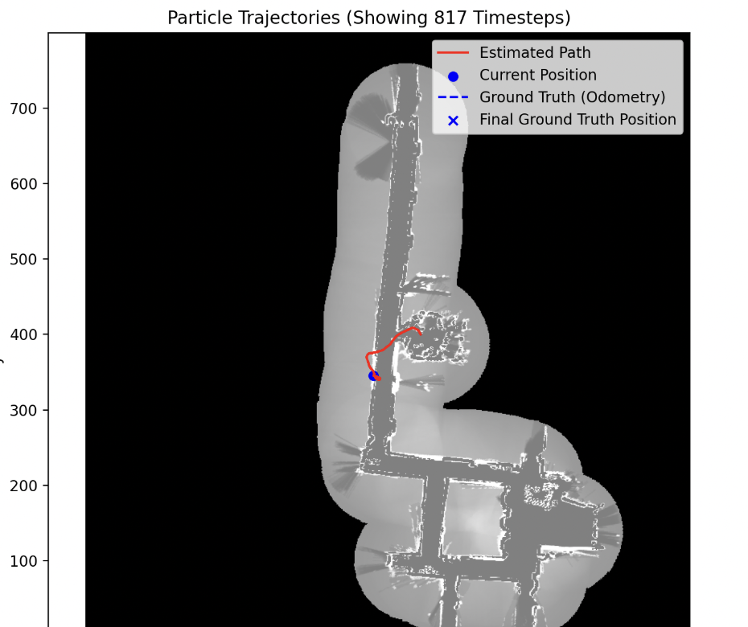
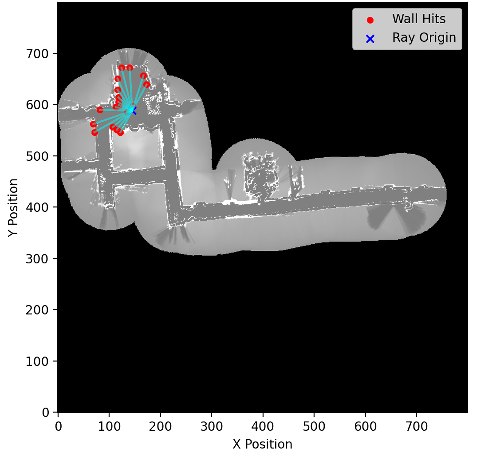
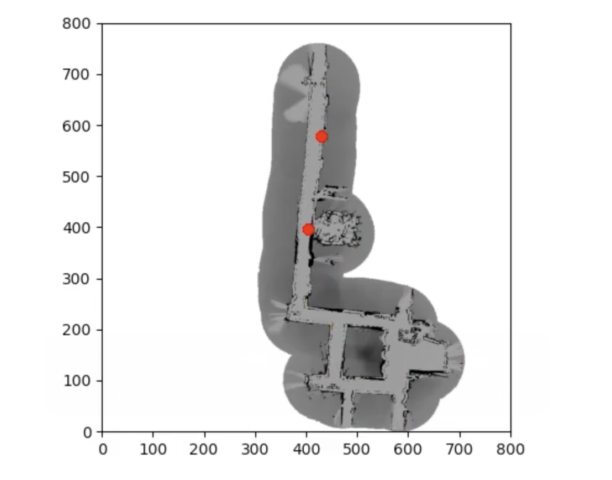
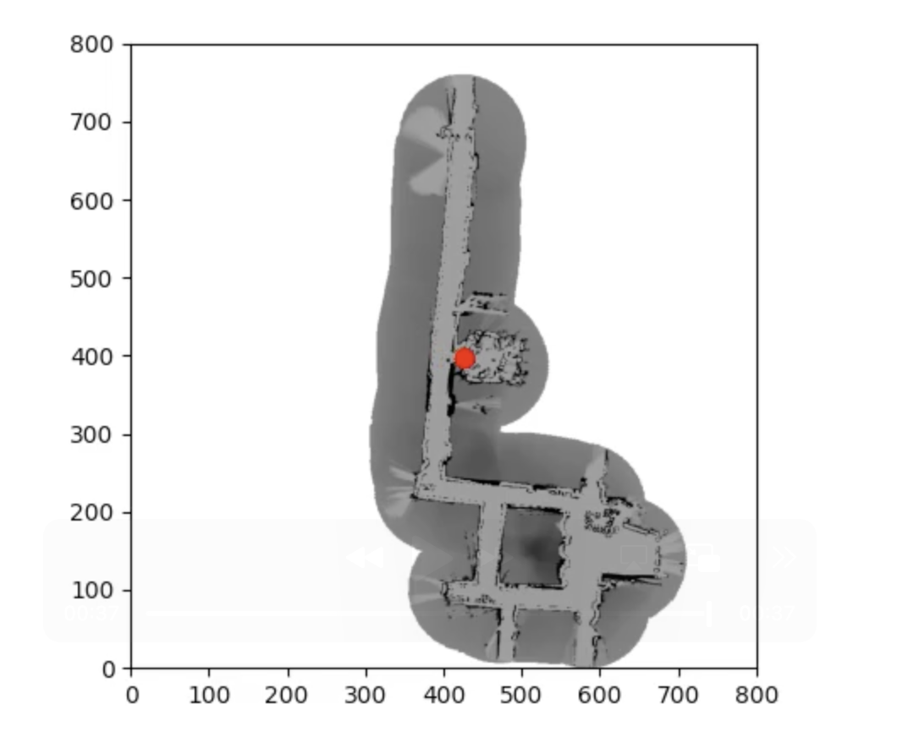
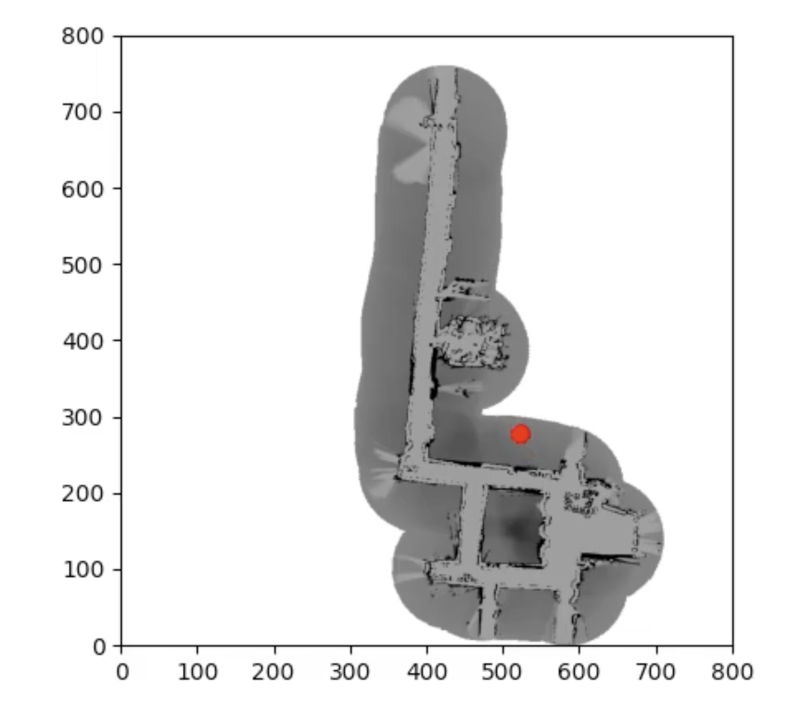

SLAM Project: Particle Filtering Using Monte Carlo Localization
Implemented a Monte Carlo Localization (MCL) system using a recursive Bayesian filter to estimate a robot's global (x, y, θ) pose with no initial knowledge using only odometry, LiDAR scans, and an occupancy grid map.

1 · Prediction Step (Motion Model)
- Updates the predicted particle poses based on the robot's incoming odometry data.
- Accounts for kinematic drift and wheel slip using probabilistic Gaussian noise.
2 · Correction Step (Sensor Model)
- Simulates LiDAR measurements by casting 90 rays per particle against the known occupancy grid.
- Calculates an observation weight for each particle by comparing expected ranges to actual readings using a probabilistic beam model.
3 · Resampling
- Redistributes the particle set using a low-variance resampling technique, prioritizing particles with the highest normalized sensor weights.
- Removes low-probability particles and duplicates high-probability ones until the filter converges on the true pose.
↻ Steps repeat until the particle cloud converges on a robot pose.


Tuning
- Sensor Weighting: Heavily weighted the expected raycast hit probability (Zhit) and random noise factor (Zrand) to prevent premature convergence.
- Vectorization: Reduced computational complexity by fully vectorizing the motion and sensor model updates to perform in a single array operation.
Adaptive Particle Count (Extra Credit)
Developed an algorithm to reduce the number of particles as localization confidence increased.
- Analyzes the distribution of particle weights to gauge the system's confidence.
- Evaluates how tightly clustered the particles are across the map.
- Continuously scales down the total particle count using a decay factor based on these two metrics.
The localization filter successfully converged from an unknown start and maintained a lock on the true pose in 4 out of the 5 recorded test scenarios using a single parameter set.
Example of Successfully Localizing in a Symmetric Environment
The algorithm correctly maintains multiple hypotheses. As the robot moves and gathers unique LiDAR signatures, the filter collapses onto the correct global pose.


Example of Filter Failing in a Sparse Environment
The filter struggles if it starts in sparse environments without distinct geometric features to constrain the sensor model.

Converged location is outside of the occupancy map free space" style="width: 100%; height: auto; object-fit: cover; display: block; border: 1px solid var(--line-strong); border-radius: 4px; background: var(--paper-raised);">Future Work
- Improved sensor model debugging: Develop a tool to overlay raycast scans on the LiDAR data to see exactly where predicted and measured ranges differ.
- Improve tuning for sparse spaces: Refine the sensor parameters to dynamically adapt to sparse conditions instead of relying on a single set of tuned values.
- Speed-adaptive motion model: Scale the odometry noise proportionally with the robot's speed and motion.
- More Robust Resampling: Explore other resampling algorithms to prevent the filter from prematurely converting onto an incorrect pose to improve overall reliability.